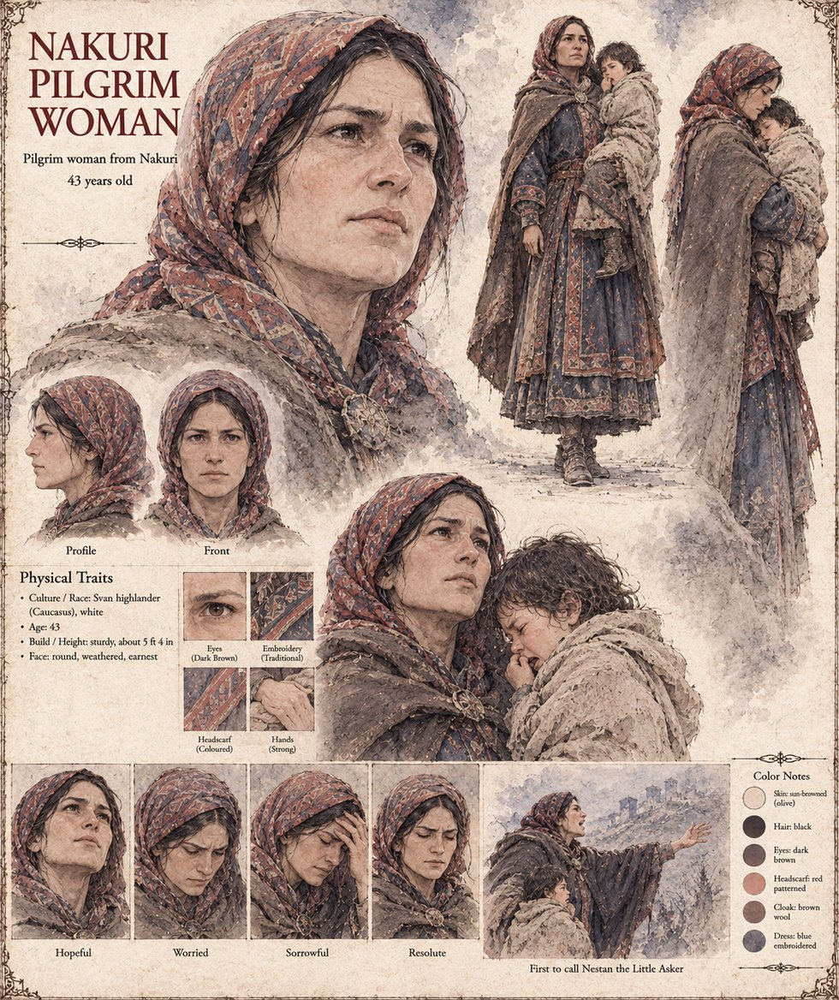

Nakuri Pilgrim Woman
Pilgrim woman from Nakuri · first to call Nestan the Little Asker · unnamed · 43 on her sheet
Within days of the first rain, mothers from Nakuri, the valley of pear orchards on the high ledges, come up the Ormeli road carrying children who have coughed through the whole dry spring. Within a week a pilgrim woman from Nakuri had named the girl the Little Asker, and the name had gone round the courtyard like a dropped coin and could not afterward be recovered. Nestan, who has never been looked at by strangers, takes to spending the daylight hours under the great oak table with the dog. The name stays. At fourteen she rides a white mule at the Vintage processions; at forty-one, in the memory of the valleys, she has been lowered a degree or two from a saint toward a debt.
The manuscript does not name the woman, say whether she is one of the mothers with a child in her arms, or what she asked of the Mother. Nakuri is one of the Mother’s four valleys, and its arrow is the one drawn at the Mercy Vote.
The manuscript gives the woman, the valley and the name. The sheet’s age of 43, sturdy build of about 5 ft 4 in, round, weathered, earnest face, black hair under a red patterned headscarf, dark brown eyes, brown wool cloak over a blue embroidered dress and small child in her arms are its own, as are its panels Hopeful, Worried, Sorrowful and Resolute and its scene First to call Nestan the Little Asker, in which she points out over a snowy hillside; the manuscript has the naming in the tower yard in the dry summer. Nestan has no sheet in this case and so no page here.
“the name had gone round the courtyard like a dropped coin and could not afterward be recovered”